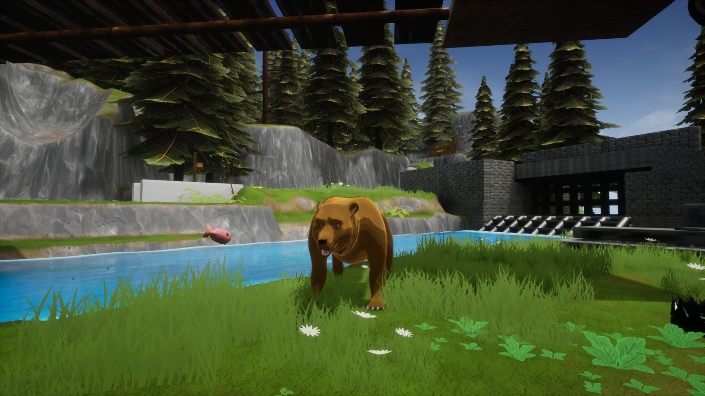
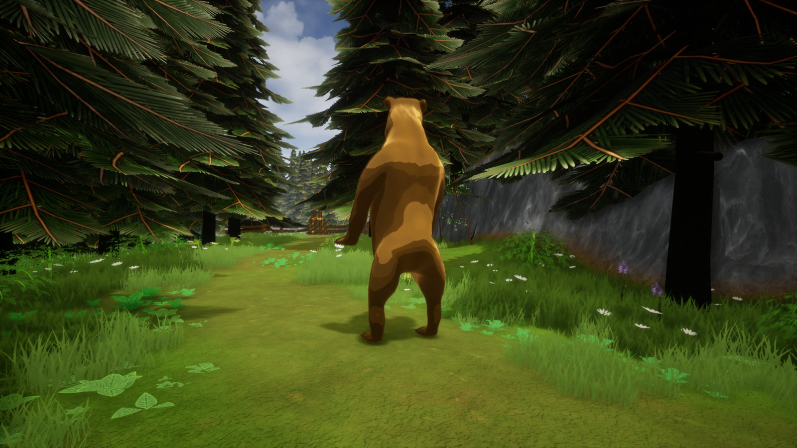
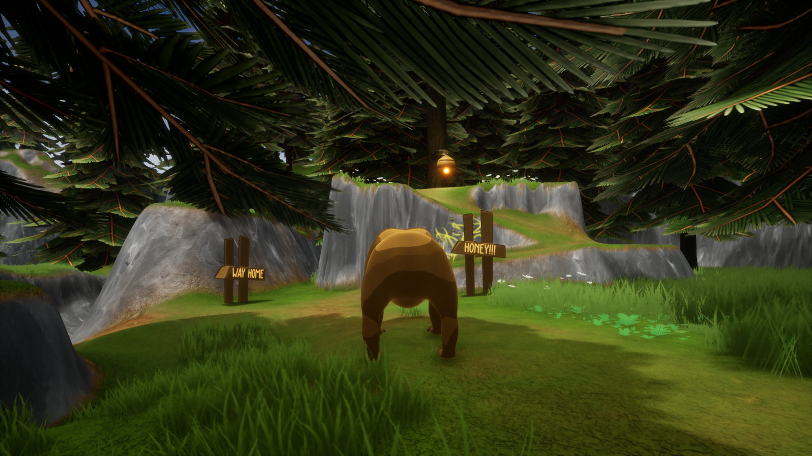
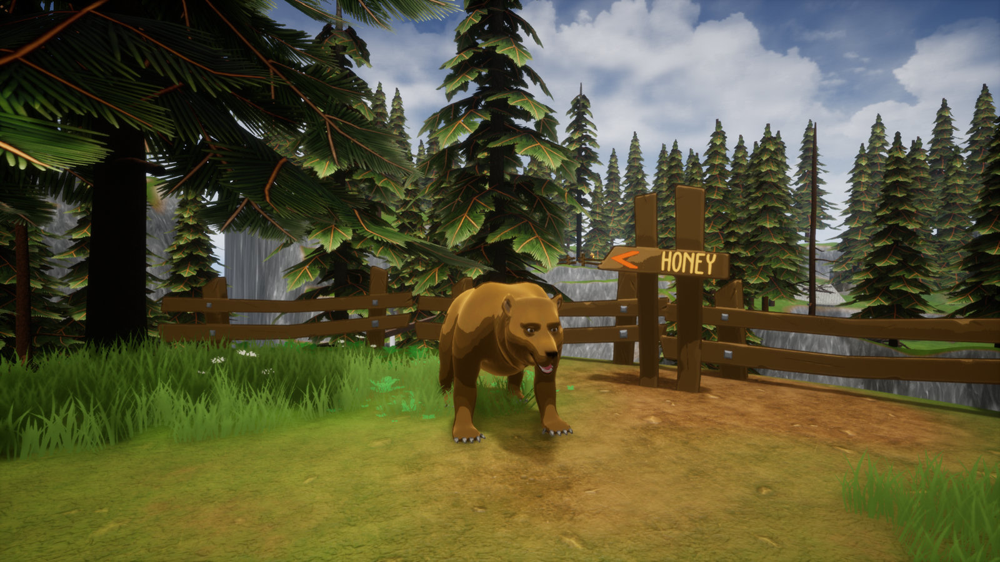
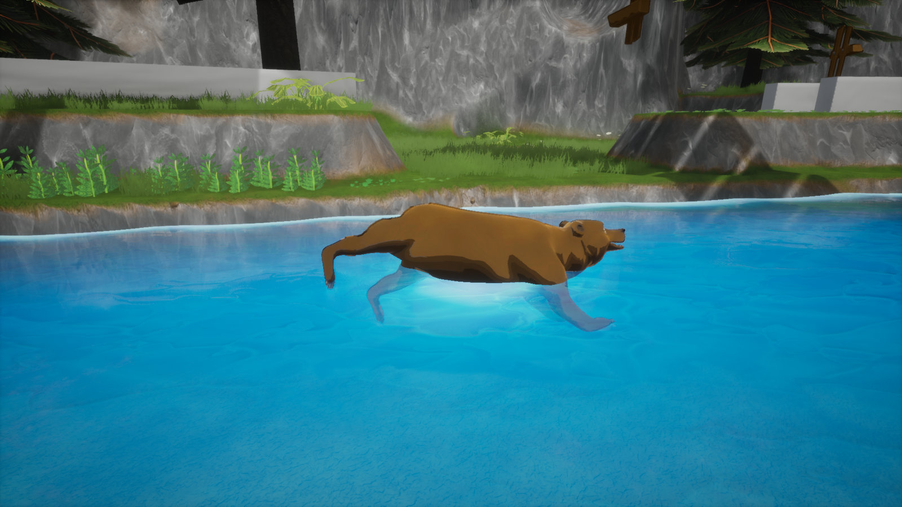
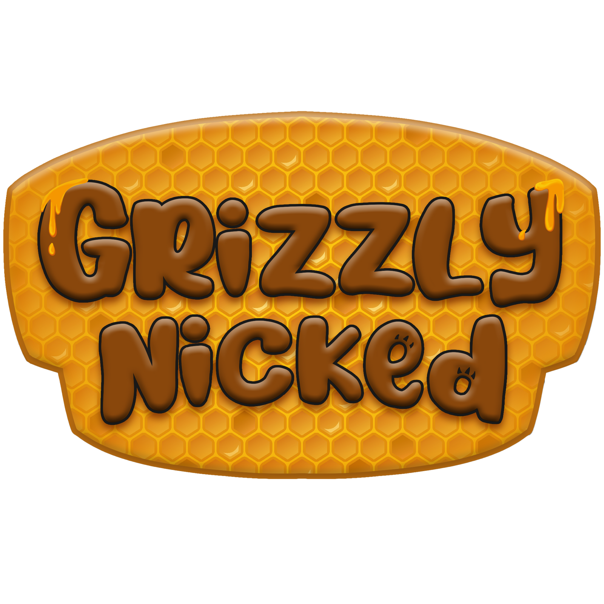

Grizzly Nicked

Grizzly Nicked is a physics-based adventure puzzle-solving game. The player plays as a weighty bear on the hunt for honey to return to her cave.
Character mechanics
- Physics-based rolling movement.
- Swinging from any "swingable object" with ragdoll animations.
- Gripping objects, with multiple grip types & rules available for designers to assign per object.
- Bear slam ability which interacts with any objects within the radius of the slam.
- Character interactions with destructible objects, with parameters exposed for designers to edit rules per object.
Additional work
- Implementing game objects extensible by designers.
- Implementing UE4 materials to create shaders for the landscape, grass, trees, water, and cell-shading.
- Working with artists to implement character animations and an IK system using UE4 Animation BP.
Screenshots




